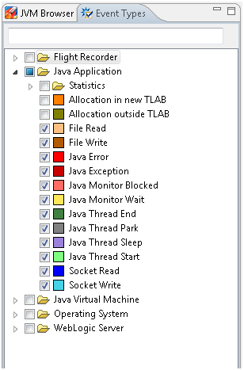
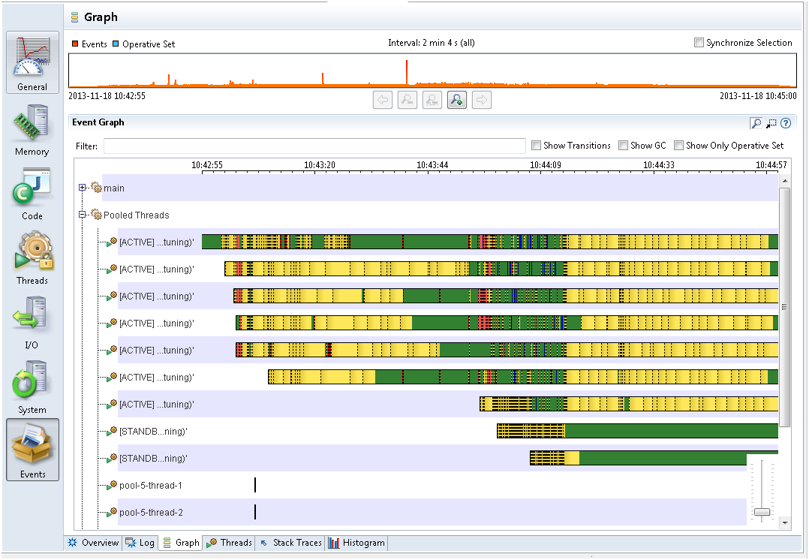

Different applications have different bottlenecks. For some applications, a bottleneck may be waiting for I/O or networking, it may be synchronization between threads, or it may be actual CPU usage. For others, a bottleneck may be garbage collection times. It is possible that an application has more than one bottleneck.
One way to find out the application bottlenecks is to look at the Events tab. This is an advanced tab, and there are a few things to do. First, click the Events tab, which opens the Event Types tab on the left side of the JFR window. This is where you select the events that you are interested in looking at. For now, select all Java Application events except for Statistics and Allocation, as shown in Figure 4-1.
Figure 4-1 Find Bottlenecks - Java Application Events
Now, in all the Events tabs, you will only see these events. Next, from the Graph tab, look at the main threads for the Java application, as shown in Figure 4-2.
Figure 4-2 Find Bottlenecks - Main Threads from the Graph Tab
The Graph tab may be hard to grasp at first. Each row is a thread, and each thread can have several lines. In Figure 4-2, each thread has a line, which represents the Java Application events that were enabled in the Event Types tab for this recording. The selected Java Application events all have the important property that they are all thread stalling events. Thread stalling indicates that the thread was not running your application during the event and they are all duration events. The duration event measures the duration the application was not running.
From the Event Types tab, look at the color of each event. For example, yellow represents Java Monitor Wait events. The yellow part is when threads are waiting on an object. This often means that the thread is idle, perhaps waiting for a task. Red represents Java Monitor Blocked events or synchronization events. If your Java application's important threads spend a lot of time being blocked, then that means that a critical section of the application is single threaded, which is a bottleneck. Blue represents Socket Reads and Socket Writes events. Again, if the Java application spends a lot of time waiting for sockets, then the main bottleneck may be in the network or with the other machines that the application communicates.
From Figure 4-2, green represents parts that don't have any events. The Green part means that the thread is not sleeping, waiting, reading to or from a socket, or not being blocked. In general, this is where the application code is run. If your Java application's important threads are spending a lot of time without generating any application events, then the bottleneck in the application is the time spent executing code, or the CPU itself.
Note: For most Java Application event types, only events longer than 20 ms are recorded (this threshold can be modified when starting the flight recording). To summarize, the areas may not have recorded events because the application is doing a lot of short tasks, such as writing to a file (a small part at a time) or spending time in synchronization for very short amounts of time.
Each of the previous bottlenecks can be further investigated within the flight recording.
The Event tab does not show garbage collections and weather garbage collections may be a bottleneck. See the next topic about garbage collection performance.